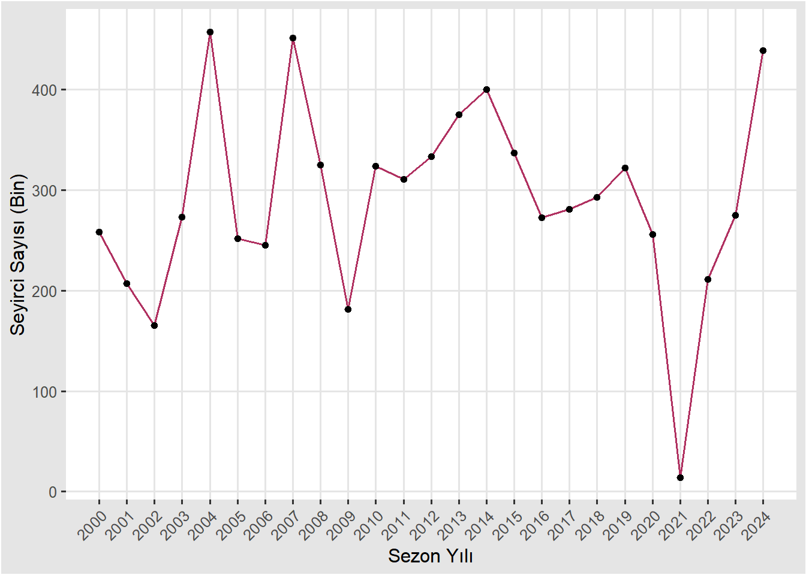
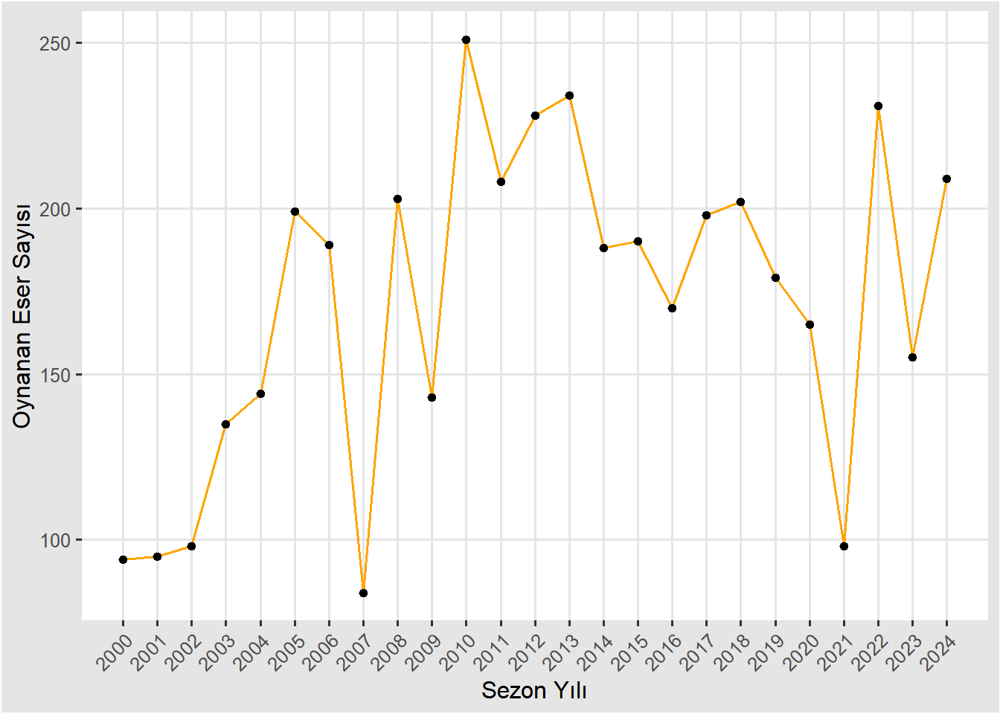
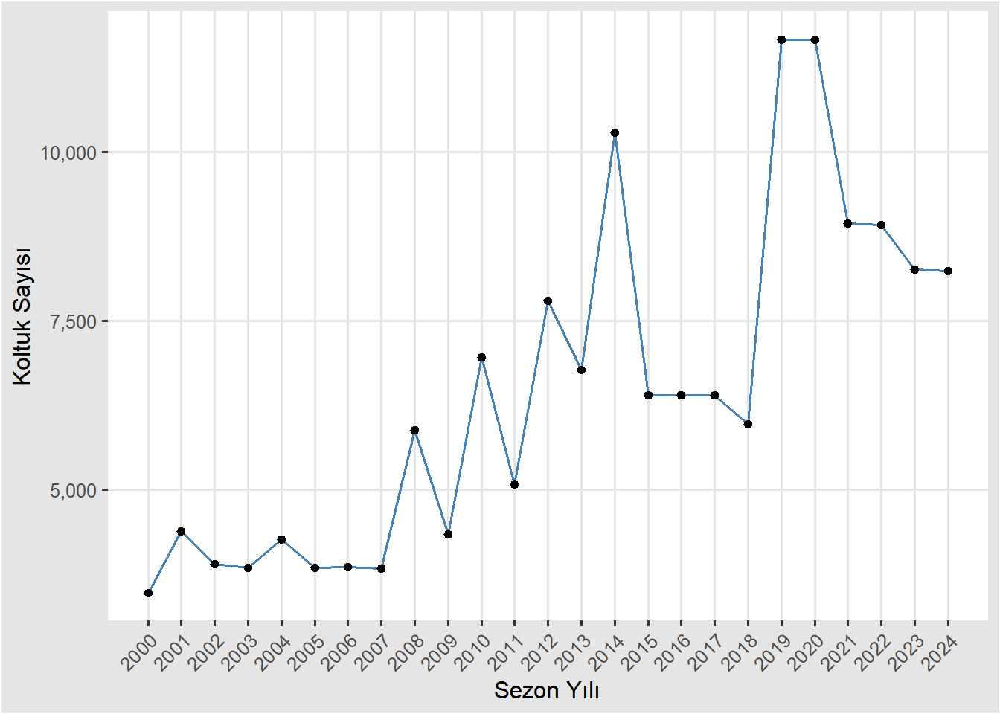
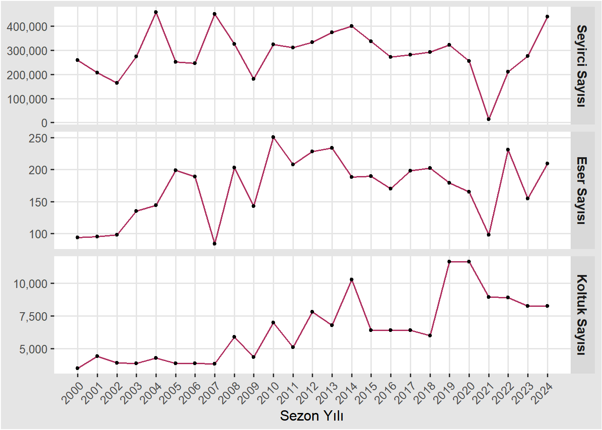
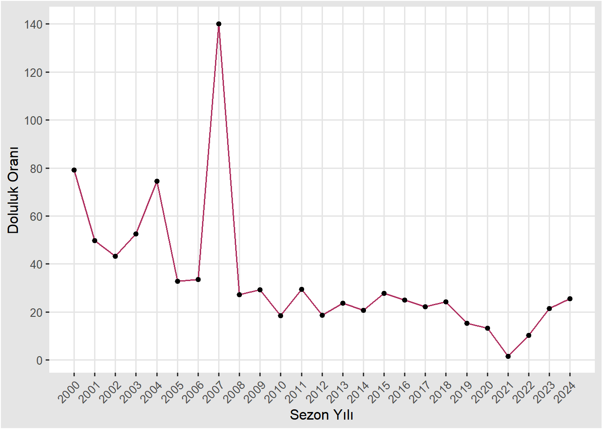
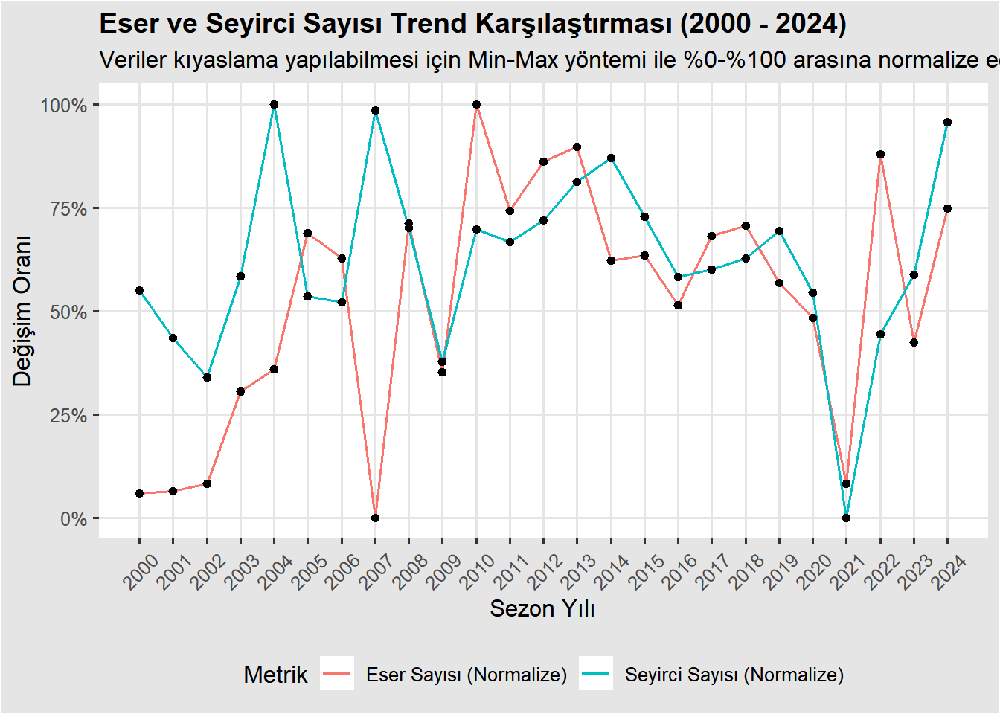
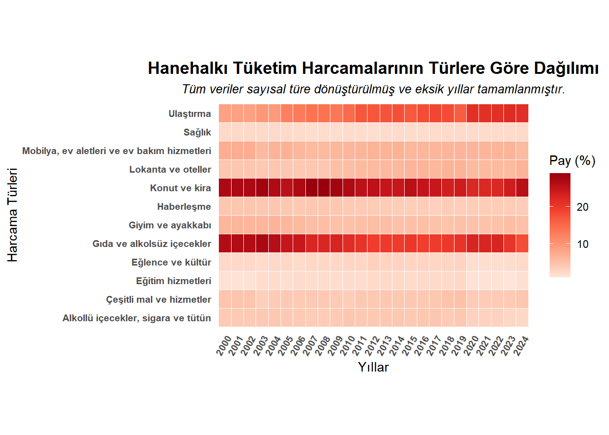

#install.packages("tidyverse", repos = "https://cran.rstudio.com/")
#install.packages("ggthemes", repos = "https://cran.rstudio.com/")
#install.packages("patchwork", repos = "https://cran.rstudio.com/")
#install.packages("RColorBrewer", repos = "https://cran.rstudio.com/")
library(tidyverse)Warning: package 'tidyverse' was built under R version 4.5.3Warning: package 'tibble' was built under R version 4.5.3Warning: package 'tidyr' was built under R version 4.5.3Warning: package 'readr' was built under R version 4.5.3Warning: package 'purrr' was built under R version 4.5.3Warning: package 'dplyr' was built under R version 4.5.3Warning: package 'stringr' was built under R version 4.5.3Warning: package 'forcats' was built under R version 4.5.3Warning: package 'lubridate' was built under R version 4.5.3── Attaching core tidyverse packages ──────────────────────── tidyverse 2.0.0 ──
✔ dplyr 1.2.1 ✔ readr 2.2.0
✔ forcats 1.0.1 ✔ stringr 1.6.0
✔ ggplot2 4.0.2 ✔ tibble 3.3.1
✔ lubridate 1.9.5 ✔ tidyr 1.3.2
✔ purrr 1.2.2
── Conflicts ────────────────────────────────────────── tidyverse_conflicts() ──
✖ dplyr::filter() masks stats::filter()
✖ dplyr::lag() masks stats::lag()
ℹ Use the conflicted package (<http://conflicted.r-lib.org/>) to force all conflicts to become errorslibrary(ggplot2)
library(readxl)Warning: package 'readxl' was built under R version 4.5.3library(knitr)
library(dplyr)
library(scales)
Attaching package: 'scales'
The following object is masked from 'package:purrr':
discard
The following object is masked from 'package:readr':
col_factorlibrary(ggthemes)Warning: package 'ggthemes' was built under R version 4.5.3library(tidyr)
#library(patchwork)
library(RColorBrewer)
operabale <- read_xlsx("operabale.xlsx")
str(operabale)tibble [25 × 5] (S3: tbl_df/tbl/data.frame)
$ sezon_yili : num [1:25] 2000 2001 2002 2003 2004 ...
$ opera_ve_bale_salonu_sayisi: num [1:25] 6 6 5 5 5 5 5 7 10 7 ...
$ koltuk_sayisi : num [1:25] 3474 4391 3897 3850 4264 ...
$ toplam_oynanan_eser_sayisi : num [1:25] 94 95 98 135 144 199 189 84 203 143 ...
$ toplam_seyirci_sayisi : num [1:25] 258547 207360 165154 273271 457717 ...#view(operabale)
kable(operabale)| sezon_yili | opera_ve_bale_salonu_sayisi | koltuk_sayisi | toplam_oynanan_eser_sayisi | toplam_seyirci_sayisi |
|---|---|---|---|---|
| 2000 | 6 | 3474 | 94 | 258547 |
| 2001 | 6 | 4391 | 95 | 207360 |
| 2002 | 5 | 3897 | 98 | 165154 |
| 2003 | 5 | 3850 | 135 | 273271 |
| 2004 | 5 | 4264 | 144 | 457717 |
| 2005 | 5 | 3850 | 199 | 252076 |
| 2006 | 5 | 3860 | 189 | 245448 |
| 2007 | 7 | 3834 | 84 | 451271 |
| 2008 | 10 | 5879 | 203 | 325364 |
| 2009 | 7 | 4345 | 143 | 181605 |
| 2010 | 12 | 6967 | 251 | 324007 |
| 2011 | 9 | 5077 | 208 | 310623 |
| 2012 | 14 | 7799 | 228 | 333707 |
| 2013 | 12 | 6776 | 234 | 375223 |
| 2014 | 15 | 10288 | 188 | 400420 |
| 2015 | 11 | 6398 | 190 | 337007 |
| 2016 | 11 | 6398 | 170 | 272578 |
| 2017 | 11 | 6398 | 198 | 281069 |
| 2018 | 11 | 5970 | 202 | 293002 |
| 2019 | 13 | 11672 | 179 | 322189 |
| 2020 | 13 | 11672 | 165 | 256063 |
| 2021 | 14 | 8949 | 98 | 14032 |
| 2022 | 14 | 8925 | 231 | 211233 |
| 2023 | 13 | 8260 | 155 | 275086 |
| 2024 | 13 | 8241 | 209 | 438950 |
#glimpse(operabale)
#summary(operabale)
anyNA(operabale)[1] FALSEsapply(operabale, class) sezon_yili opera_ve_bale_salonu_sayisi
"numeric" "numeric"
koltuk_sayisi toplam_oynanan_eser_sayisi
"numeric" "numeric"
toplam_seyirci_sayisi
"numeric" sum(duplicated(operabale))[1] 0#yıllara göre seyirci sayısı değişimi
ob1 <- operabale |> ggplot(aes(x = sezon_yili, y = toplam_seyirci_sayisi/1000))
ob1 + geom_line(color = "maroon") +
geom_point(color = "black") +
xlab("Sezon Yılı") +
ylab("Seyirci Sayısı (Bin)") +
scale_x_continuous(breaks = seq(2000, 2024, by = 1)) +
theme_igray() +
theme(axis.text.x = element_text(angle = 45, hjust = 1))
#yıllara göre oynanan eser sayısı değişimi
ob2 <- operabale |> ggplot(aes(x = sezon_yili, y = toplam_oynanan_eser_sayisi))
ob2 + geom_line(color = "orange") +
geom_point(color = "black") +
xlab("Sezon Yılı") +
ylab("Oynanan Eser Sayısı") +
scale_x_continuous(breaks = seq(2000, 2024, by = 1)) +
theme_igray() +
theme(axis.text.x = element_text(angle = 45, hjust = 1))
#yıllara göre koltuk sayısı değişimi
ob3 <- operabale |> ggplot(aes(x = sezon_yili, y = koltuk_sayisi))
ob3 + geom_line(color = "steelblue") +
geom_point(color = "black") +
xlab("Sezon Yılı") +
ylab("Koltuk Sayısı") +
scale_y_continuous(labels = comma) +
scale_x_continuous(breaks = seq(2000, 2024, by = 1)) +
theme_igray() +
theme(axis.text.x = element_text(angle = 45, hjust = 1))
#birlikte göstermek
uzun <- operabale |>
pivot_longer(
cols = c(toplam_seyirci_sayisi, toplam_oynanan_eser_sayisi, koltuk_sayisi),
names_to = "degisken",
values_to = "deger"
)
uzun$degisken <- factor(
uzun$degisken,
levels = c("toplam_seyirci_sayisi", "toplam_oynanan_eser_sayisi", "koltuk_sayisi"),
labels = c("Seyirci Sayısı",
"Eser Sayısı",
"Koltuk Sayısı")
)
ob4 <- uzun |> ggplot(aes(x = sezon_yili, y = deger))
ob4 + geom_line(color = "maroon") +
geom_point(size = 1) +
facet_grid(degisken ~ ., scales = "free_y") +
scale_x_continuous(breaks = seq(2000, 2024, by = 1))+
scale_y_continuous(labels = comma) +
theme_igray() +
theme(
strip.text.y = element_text(size = 11, face = "bold"),
axis.text.x = element_text(angle = 45, hjust = 1)) +
labs(x = "Sezon Yılı", y = NULL)
#koltuk sayısına göre salonların doluluk oranı tahmini, kültür-sanat etkinliklerine olan ilgi
dolulukorani <- (operabale$toplam_seyirci_sayisi / (operabale$koltuk_sayisi * operabale$toplam_oynanan_eser_sayisi)) * 100
dolulukorani [1] 79.173863 49.709334 43.244673 52.577393 74.544800 32.901651
[7] 33.644214 140.121904 27.262771 29.228194 18.528270 29.414611
[13] 18.766857 23.664656 20.702698 27.723055 25.060957 22.187252
[19] 24.296565 15.420995 13.295896 1.599996 10.245698 21.486058
[25] 25.485247#%100ü geçmiş olanlar var, 100 mü yapılmalı?? bu formül yanlış, düzenle!!
ob5 <- operabale |> ggplot(aes(x = sezon_yili, y = dolulukorani))
ob5 + geom_line(color = "maroon") +
geom_point(color = "black") +
xlab("Sezon Yılı") +
ylab("Doluluk Oranı") +
scale_x_continuous(breaks = seq(2000, 2024, by = 1)) +
scale_y_continuous(breaks = seq(0, 150, by = 20)) +
theme_igray() +
theme(axis.text.x = element_text(angle = 45, hjust = 1))
#normalize edilmiş trend grafiği, eser sayısı ve seyirci sayısındaki büyümeyi birlikte görmek için (arz-talep)
# Min-Max Normalizasyon Fonksiyonu
min_max_norm <- function(x) {
(x - min(x, na.rm = TRUE)) / (max(x, na.rm = TRUE) - min(x, na.rm = TRUE))
}
# Veriyi normalize etme ve uzun formata getirme
normalize_operabale <- operabale |>
mutate(
eser_norm = min_max_norm(toplam_oynanan_eser_sayisi),
seyirci_norm = min_max_norm(toplam_seyirci_sayisi)
) |>
select(sezon_yili, eser_norm, seyirci_norm) |>
pivot_longer(cols = c(eser_norm, seyirci_norm),
names_to = "Metrik",
values_to = "Deger") |>
mutate(Metrik = recode(Metrik,
"eser_norm" = "Eser Sayısı (Normalize)",
"seyirci_norm" = "Seyirci Sayısı (Normalize)"))
ob6 <- normalize_operabale |> ggplot(aes(x = sezon_yili, y = Deger, color = Metrik, group = Metrik))
ob6 + geom_line() +
geom_point(color = "black") +
scale_y_continuous(labels = scales::percent, limits = c(0, 1)) +
scale_x_continuous(breaks = seq(2000, 2024, by = 1)) +
labs(
title = "Eser ve Seyirci Sayısı Trend Karşılaştırması (2000 - 2024)",
subtitle = "Veriler kıyaslama yapılabilmesi için Min-Max yöntemi ile %0-%100 arasına normalize edilmiştir.",
x = "Sezon Yılı",
y = "Değişim Oranı") +
theme_igray() +
theme(
legend.position = "bottom",
plot.title = element_text(face = "bold", size = 14),
axis.text.x = element_text(angle = 45, vjust = 0.5))
#normalize_operabale
#uzun
Sys.setlocale("LC_ALL", "Turkish") Warning in Sys.setlocale("LC_ALL", "Turkish"): using locale code page other
than 65001 ("UTF-8") may cause problems[1] "LC_COLLATE=Turkish_Türkiye.1254;LC_CTYPE=Turkish_Türkiye.1254;LC_MONETARY=Turkish_Türkiye.1254;LC_NUMERIC=C;LC_TIME=Turkish_Türkiye.1254"options(encoding = "UTF-8")
library(tidyverse)
library(RColorBrewer)
# 1. Veriyi Oku
# Not: Dosya yolunu kendi bilgisayarına göre güncelleyebilirsin.
df <- read_xlsx("Hanetuketim2.xlsx")
# 2. Veri Türlerini Numeric Yapma ve Temizleme
df_clean <- df %>%
rename(Yil = "Anket yılı") %>%
# Sadece geçerli yıl içeren satırları tut (dipnot metinlerini eler)
filter(!is.na(Yil) & Yil >= 2002 & Yil <= 2024) %>%
# Yıl sütununu tam sayı yap
mutate(Yil = as.integer(Yil)) %>%
# Yil sütunu HARİÇ tüm sütunları numeric (sayısal) türe dönüştür
# mutate(across(...)) yapısı tüm sütunları tek tek yazma zahmetinden kurtarır.
mutate(across(-Yil, ~ as.numeric(str_replace_all(as.character(.), ",", "."))))Warning: There was 1 warning in `mutate()`.
i In argument: `Yil = as.integer(Yil)`.
Caused by warning:
! Zorlamadan dolayı ortaya çıkan NAs# 3. 2000-2024 Yılları İçin Zaman Serisi İskeleti Oluşturma
all_years <- data.frame(Yil = 2000:2024)
# 4. Eksik Yılları Sonraki Yılın Verisiyle Doldurma (2000 ve 2001 -> 2002 olur)
df_filled <- all_years %>%
left_join(df_clean, by = "Yil") %>%
arrange(Yil) %>%
fill(-Yil, .direction = "up")
# 5. Veriyi Isı Haritası (geom_tile) İçin Uzun (Long) Formata Getirme
df_long <- df_filled %>%
pivot_longer(
cols = -Yil,
names_to = "Harcama_Turu",
values_to = "Yuzde"
) %>%
mutate(Harcama_Turu = str_trim(Harcama_Turu))
# 6. Sıcaklık Grafiğini (Isı Haritası) Çizme
ggplot(df_long, aes(x = factor(Yil), y = Harcama_Turu, fill = Yuzde)) +
coord_fixed(ratio = 1.5) +
geom_tile(color = "white", linewidth = 0.3) +
scale_fill_distiller(
palette = "Reds",
direction = 1,
name = "Pay (%)"
) +
labs(
title = "Hanehalkı Tüketim Harcamalarının Türlere Göre Dağılımı",
subtitle = "Tüm veriler sayısal türe dönüştürülmüş ve eksik yıllar tamamlanmıştır.",
x = "Yıllar",
y = "Harcama Türleri"
) +
theme_minimal() +
theme(
axis.text.x = element_text(angle = 60, vjust = 1, hjust = 1, face = "bold", size = 8),
axis.text.y = element_text(face = "bold", size = 8),
plot.title = element_text(size = 14, face = "bold", hjust = 0.5),
plot.subtitle = element_text(size = 10, face = "italic", hjust = 0.5),
panel.grid = element_blank()
)